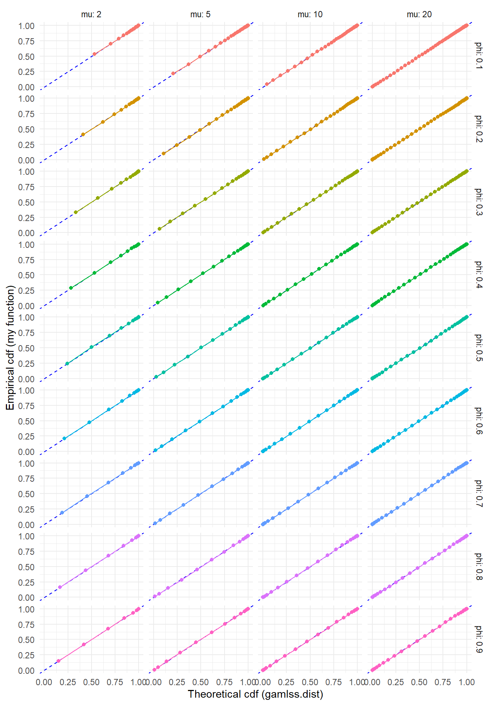
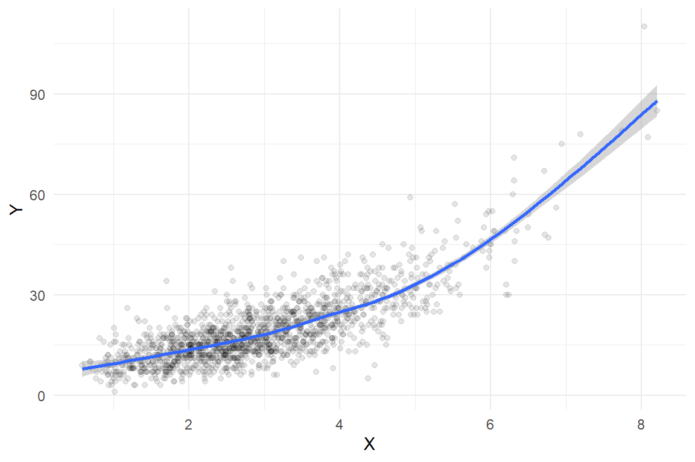

For a project I am working on, we are using Stan to fit generalized random effects location-scale models to a bunch of count data. In a previous post, I walked through our implementation of Efron’s (1986) double-Poisson distribution, which we are interested in using because it allows for both over- and under-dispersion relative to the Poisson distribution. Another distribution with these properties is the generalized Poisson distribution described by Consul and Jain (1973).
In this post, I’ll walk through my implementation of the GPO in Stan. The gamlss.dist package provides a full set of distributional functions for the generalized Poisson distribution, including a sampler, but the functions are configured to only allow for over-dispersion. Since I’m interested in allowing for under-dispersion as well, I’ll need to write my own functions. As in my previous post, I can validate my Stan functions against the functions from gamlss.dist (although only for over-dispersion scenarios).
Code
library(tidyverse)library(patchwork) # composing figureslibrary(gamlss.dist) # DPO distribution functionslibrary(rstan) # Stan interface to Rlibrary(brms) # fitting generalized linear modelslibrary(bayesplot) # Examine fitted modelslibrary(loo) # Model fit measures
The generalized Poisson
Consul and Jain’s generalized Poisson distribution is a discrete distribution for non-negative counts, with support \(\mathcal{S}_X = \{0, 1, 2, 3, ...\}\). The mean-variance relationship of the generalized Poisson is constant; for \(X \sim GPO(\mu, \phi)\), \(\text{E}(X) = \mu\) and \(\text{Var}(X) = \mu / \phi\) for \(0 < \phi < 1\); the expectation and variance are not exact but are close approximations when there is underdispersion, so \(\phi > 1\). Thus, like the double-Poisson distribution, the generalized Poisson satisfies the assumptions of a quasi-Poisson generalized linear model (at least approximately).
The density of the generalized Poisson distribution with mean \(\mu\) and inverse-disperson \(\phi\) is: \[
f(x | \mu, \phi) = \mu \sqrt{\phi} \left( x + \sqrt{\phi}(\mu - x) \right)^{x-1} \frac{\exp \left[-\left( x + \sqrt{\phi}(\mu - x)\right)\right]}{x!}.
\] We then have \[
\ln f(x | \mu, \phi) = \frac{1}{2} \ln \phi + \ln \mu + (x - 1) \ln \left( x + \sqrt{\phi}(\mu - x) \right) - \left( x + \sqrt{\phi}(\mu - x) \right) - \ln \left(x!\right).
\] Using the GPO with under-dispersed data is a little bit more controversial (by statistical standards) than using the DPO. This is because, for parameter values corresponding to under-dispersion, its probability mass function becomes negative for large counts. In particular, note that for values \(x > \frac{\mu\sqrt\phi}{\sqrt\phi - 1}\), the quantity \(x + \sqrt{\phi}(\mu - x)\) becomes negative, and so \(f(x| \mu, \phi)\) is no longer a proper probability. Consul suggested handling this situation by truncating the distribution at \(m = \left\lfloor \frac{\mu\sqrt\phi}{\sqrt\phi - 1}\right\rfloor\). However, doing so makes the distribution only an approximation, such that \(\mu\) is no longer exactly the mean and \(\phi\) is no longer exactly the inverse dispersion. For modest under-dispersion of no less than 60% of the mean, \(1 < \phi < 5 / 3\) and the truncation point is fairly extreme, with \(m \approx 4.4 \mu\), so I’m not too worried about this issue. We’ll see how it plays out in application, of course.
Log of the probability mass function
Here’s a Stan function implementing the lpmf, with the truncation bit:
Code
stancode_lpmf <-"real gpo_lpmf(int X, real mu, real phi) { real ans; real m = mu / (1 - inv(sqrt(phi))); real z = X + sqrt(phi) * (mu - X); if (phi > 1 && X > m) ans = negative_infinity(); else ans = log(mu) + inv(2) * log(phi) + (X - 1) * log(z) - z - lgamma(X + 1); return ans;}"
To check that this is accurate, I’ll compare the Stan function to the corresponding function from gamlss.dist for a couple of different parameter values and for \(x = 0,...,100\). If my function is accurate, my calculated log-probabilities should be equal to the results from gamlss.dist::dGPO. Note that the gamlss.dist function uses a different parameterization for the dispersion, with \(\sigma = \frac{\phi^{-1/2} - 1}{\mu}\).
I should enter this figure in the competition for the world’s most boring statistical graphic.
Sampler
The last thing I’ll need is a sampler, which I’ll implement by generating random points from a uniform distribution, then computing the generalized Poisson quantiles of these random points. My implementation just generates a single random variate:
Code
stancode_qr <-"int gpo_quantile(real p, real mu, real phi) { int q = 0; real phi_sqrt = sqrt(phi); real mu_phi_sqrt = mu * phi_sqrt; real m; if (phi > 1) m = mu / (1 - inv(phi_sqrt)); else m = positive_infinity(); real lpmf = - mu_phi_sqrt; real cdf = exp(lpmf); real ln_inc; while (cdf < p && q < m) { q += 1; ln_inc = (q - 1) * log(mu_phi_sqrt + q * (1 - phi_sqrt)) - (q - 2) * log(mu_phi_sqrt + (q - 1) * (1 - phi_sqrt)) + (phi_sqrt - 1) - log(q); lpmf += ln_inc; cdf += exp(lpmf); } return q;}int gpo_rng(real mu, real phi) { real p = uniform_rng(0,1); int x = gpo_quantile(p, mu, phi); return x;}"
To check this function, I’ll generate some large samples from the generalized Poisson with a few different parameter sets. If the sampler is working properly, the empirical cumulative distribution should line up closely with the cumulative distribution computed using gamlss.dist::pGPO().
ggplot(test_rng, aes(gamlss_F, Freq_cum, color =factor(phi))) +geom_abline(slope =1, color ="blue", linetype ="dashed") +geom_point() +geom_line() +facet_grid(phi ~ mu, labeller ="label_both") +theme_minimal() +labs(x ="Theoretical cdf (gamlss.dist)", y ="Empirical cdf (my function)") +theme(legend.position ="none")

Another approach to checking the sampler is to simulate a bunch of observations and check whether the empirical mean and variance match the theoretical moments. I’ll do this as well, using some values of \(\phi > 1\) to test whether the sampler still works when there’s under-dispersion.
Looks like the sample moments closely match the parameter values, with deviations that look pretty much like random error. Nice!
Using the custom distribution functions
To finish out my tests of these functions, I’ll try out a small simulation. Following my previous post, I’ll generate data based on a generalized linear model with a single predictor \(X\), where the outcome \(Y\) follows a generalized Poisson distribution conditional on \(X\). The data-generating process is:
\[
\begin{aligned}
X &\sim \Gamma(6,2) \\
Y|X &\sim GPO(\mu(X), \phi) \\
\log \mu(X) &= 2 + 0.3 \times X
\end{aligned}
\] with the dispersion parameter set to \(\phi = 6/10\) so that the outcome is over-dispersed. I’m looking at over-dispersion here so that the negative binomial has a chance to keep up, since it doesn’t allow for any degree of under-dispersion.
The following code generates a large sample from the data-generating process:
Here’s what the sample looks like, along with a smoothed regression estimated using a basic cubic spline:
Code
ggplot(dat, aes(X, Y)) +geom_point(alpha =0.1) +geom_smooth(method ='gam', formula = y ~s(x, bs ="cs")) +theme_minimal()

Here is a fit using quasi-likelihood estimation of a log-linear model:
Code
quasi_fit <-glm(Y ~ X, family =quasipoisson(link ="log"), data = dat)summary(quasi_fit)
Call:
glm(formula = Y ~ X, family = quasipoisson(link = "log"), data = dat)
Coefficients:
Estimate Std. Error t value Pr(>|t|)
(Intercept) 1.981959 0.020609 96.17 <2e-16 ***
X 0.306733 0.005525 55.52 <2e-16 ***
---
Signif. codes: 0 '***' 0.001 '**' 0.01 '*' 0.05 '.' 0.1 ' ' 1
(Dispersion parameter for quasipoisson family taken to be 1.680427)
Null deviance: 7248.1 on 1499 degrees of freedom
Residual deviance: 2520.5 on 1498 degrees of freedom
AIC: NA
Number of Fisher Scoring iterations: 4
This approach recovers the data-generating parameters quite well, with a dispersion estimate of 1.68 compared to the true dispersion parameter of 1.67.
Candidate models
Now let me fit the same generalized linear model but assuming that the outcome follow a couple of different distributions, including a true Poisson (with unit dispersion), a negative binomial, the double-Poisson distribution from the previous post, and the generalized Poisson distribution. Here goes!
Code
Poisson_fit <-brm( Y ~ X, family =poisson(link ="log"),data = dat, warmup =500, iter =2500, chains =4, cores =4,seed =20231204 )
Code
negbin_fit <-brm( Y ~ X, family =negbinomial(link ="log"),data = dat, warmup =500, iter =2500, chains =4, cores =4,seed =20231204 )
Code
stancode_dpo <-"real dpo_lpmf(int X, real mu, real phi) { real ans; real A = inv(2) * log(phi) - phi * mu; if (X == 0) ans = A; else ans = A + X * (phi * (1 + log(mu)) - 1) - lgamma(X + 1) + (1 - phi) * X * log(X); return ans;}vector dpo_cdf_vec(real mu, real phi, int maxval) { real d = exp(phi * (1 + log(mu)) - 1); real prob; int n = maxval + 1; vector[n] cdf; cdf[1] = sqrt(phi) * exp(-mu * phi); prob = cdf[1] * d; cdf[2] = cdf[1] + prob; for (i in 2:maxval) { prob = prob * d * exp((1 - phi) * (i - 1) * (log(i) - log(i - 1))) / (i^phi); cdf[i + 1] = cdf[i] + prob; if (prob / cdf[i + 1] < 1e-8) { n = i + 1; break; } } return cdf / cdf[n];}int dpo_quantile(real p, real mu, real phi, int maxval) { vector[maxval + 1] cdf_vec = dpo_cdf_vec(mu, phi, maxval); int q = 0; while (cdf_vec[q + 1] < p) { q += 1; } return q;}int dpo_rng(real mu, real phi, int maxval) { real p = uniform_rng(0,1); int x = dpo_quantile(p, mu, phi, maxval); return x;}"double_Poisson <-custom_family("dpo", dpars =c("mu","phi"),links =c("log","log"),lb =c(0, 0), ub =c(NA, NA),type ="int")double_Poisson_stanvars <-stanvar(scode = stancode_dpo, block ="functions")phi_prior <-prior(exponential(1), class ="phi")DPO_fit <-brm( Y ~ X, family = double_Poisson,prior = phi_prior,stanvars = double_Poisson_stanvars,data = dat, warmup =500, iter =2500, chains =4, cores =4,seed =20231204 )expose_functions(DPO_fit, vectorize =TRUE)log_lik_dpo <-function(i, prep) { mu <- brms::get_dpar(prep, "mu", i = i) phi <- brms::get_dpar(prep, "phi", i = i) y <- prep$data$Y[i]dpo_lpmf(y, mu, phi)}posterior_predict_dpo <-function(i, prep, maxval =NULL, ...) { mu <- brms::get_dpar(prep, "mu", i = i) phi <- brms::get_dpar(prep, "phi", i = i)if (is.null(maxval)) maxval <-20* mu /min(phi, 1)dpo_rng(mu, phi, maxval = maxval)}
Code
stancode_gpo <-"real gpo_lpmf(int X, real mu, real phi) { real ans; real m = mu / (1 - inv(sqrt(phi))); real z = X + sqrt(phi) * (mu - X); if (phi > 1 && X > m) ans = negative_infinity(); else ans = log(mu) + inv(2) * log(phi) + (X - 1) * log(z) - z - lgamma(X + 1); return ans;}int gpo_quantile(real p, real mu, real phi) { int q = 0; real phi_sqrt = sqrt(phi); real mu_phi_sqrt = mu * phi_sqrt; real m; if (phi > 1) m = mu / (1 - inv(phi_sqrt)); else m = positive_infinity(); real lpmf = - mu_phi_sqrt; real cdf = exp(lpmf); real ln_inc; while (cdf < p && q < m) { q += 1; ln_inc = (q - 1) * log(mu_phi_sqrt + q * (1 - phi_sqrt)) - (q - 2) * log(mu_phi_sqrt + (q - 1) * (1 - phi_sqrt)) + (phi_sqrt - 1) - log(q); lpmf += ln_inc; cdf += exp(lpmf); } return q;}int gpo_rng(real mu, real phi) { real p = uniform_rng(0,1); int x = gpo_quantile(p, mu, phi); return x;}"generalized_Poisson <-custom_family("gpo", dpars =c("mu","phi"),links =c("log","log"),lb =c(0, 0), ub =c(NA, NA),type ="int")generalized_Poisson_stanvars <-stanvar(scode = stancode_gpo, block ="functions")phi_prior <-prior(exponential(1), class ="phi")GPO_fit <-brm( Y ~ X, family = generalized_Poisson,prior = phi_prior,stanvars = generalized_Poisson_stanvars,data = dat, warmup =500, iter =2500, chains =4, cores =4,seed =20231204 )expose_functions(GPO_fit, vectorize =TRUE)log_lik_gpo <-function(i, prep) { mu <- brms::get_dpar(prep, "mu", i = i) phi <- brms::get_dpar(prep, "phi", i = i) y <- prep$data$Y[i]gpo_lpmf(y, mu, phi)}posterior_predict_gpo <-function(i, prep, maxval =NULL, ...) { mu <- brms::get_dpar(prep, "mu", i = i) phi <- brms::get_dpar(prep, "phi", i = i)gpo_rng(mu, phi)}
Model comparison
Here is a comparison of LOOIC for all of the models:
The model based on the double-Poisson distribution fits equally well to the true data-generating process here, suggesting that there’s really just not enough information to distriguish between the two models. The negative binomial distribution fit is substantially worse, and the Poisson distribution fit is awful.
Here’s the posterior for the dispersion (i.e., \(1 / \phi\)) based on the GPO and DPO models:
Right on par. To get a better sense of model fit, I’ll run some posterior predictive checks, using the quasi-likelihood dispersion as a summary statistic:
Both the double Poisson and the generalized Poisson models generate data with levels of dispersion similar to the observed data. The negative binomial distribution is not noticeably worse.
Marginal posterior predictive densities
Here’s some rootograms for the posterior predictive density of the raw outcomes:
You can see from these that the Poisson model maybe expects slightly fewer low counts and slightly fewer high counts than are present in the observed data. However, the figure doesn’t really capture the degree of mis-fit that is apparent with the dispersion summary statistics. I think this is because the distribution of \(Y\) changes so much depending on the value of the predictor \(X\).
Posterior predictive residual densities
One way to focus in on the distributional assumption is to examine the distribution of residuals rather than raw outcomes. I’ll do that here by looking the deviance residuals from the quasi-Poisson GLM model, treating the calculation of the residuals as merely a transformation of the raw data. Here are some posterior predictive density plots of these deviance residuals:
It’s quite a bit clearer from these plots that the DPO and GPO models are closer to replicating the distribution of the data than the Poisson model. The negative binomial model is not obviously mis-specified either.
A notable difference between the negative binomial versus the DPO and GPO distributions is in the form of the mean-variance relationship. For the negative binomial, the variance increases with the square of the mean, whereas for the DPO and GPO, the variance increases in constant proportion to the mean. The residual posterior density plots above don’t really capture these mean-variance relationships in an obvious way. I took one more crack at a posterior predictive check to get at this. Below is a figure showing the loess smooth of the squared residuals versus \(X\) based on the posterior predictive distributions versus the real data. I couldn’t find an easy way to do this with the bayesplot functions I’ve used above, so I had to bang it out in regular ggplot.
Aha! Here we can clearly see that the negative binomial model generates residuals that have more curvature to the mean-variance relationship, and so don’t really fit with the observed data. The double Poisson and generalized Poisson both generate residuals that match the observed mean-variance relationship decently well.
---title: Implementing Consul's generalized Poisson distribution in Stanauthors: admindate: '2023-12-06'categories:- Bayes- simulation- distribution-theory- generalized linear model- programming- Rstatscode-fold: showcode-tools: true---$$\def\Pr{{\text{Pr}}}\def\E{{\text{E}}}\def\Var{{\text{Var}}}\def\Cov{{\text{Cov}}}\def\bm{\mathbf}\def\bs{\boldsymbol}$$For a project I am working on, we are using [Stan](https://mc-stan.org/) to fit generalized random effects location-scale models to a bunch of count data. In [a previous post](/double-poisson-in-Stan/), I walked through our implementation of [Efron's (1986)](https://doi.org/10.2307/2289002) double-Poisson distribution, which we are interested in using because it allows for both over- and under-dispersion relative to the Poisson distribution. Another distribution with these properties is the generalized Poisson distribution described by [Consul and Jain (1973)](https://doi.org/10.1080/00401706.1973.10489112).In this post, I'll walk through my implementation of the GPO in Stan.The [`gamlss.dist` package](https://cran.r-project.org/package=gamlss.dist) provides a full set of distributional functions for the generalized Poisson distribution, including a sampler, but the functions are configured to only allow for over-dispersion. Since I'm interested in allowing for under-dispersion as well, I'll need to write my own functions. As in my previous post, I can validate my Stan functions against the functions from `gamlss.dist` (although only for over-dispersion scenarios).```{r setup, include = FALSE}knitr::opts_chunk$set(message = FALSE, warning = FALSE, fig.retina = 2)``````{r pkgs, warning = FALSE, message = FALSE}library(tidyverse)library(patchwork) # composing figureslibrary(gamlss.dist) # DPO distribution functionslibrary(rstan) # Stan interface to Rlibrary(brms) # fitting generalized linear modelslibrary(bayesplot) # Examine fitted modelslibrary(loo) # Model fit measures```## The generalized Poisson Consul and Jain's generalized Poisson distribution is a discrete distribution for non-negative counts, with support $\mathcal{S}_X = \{0, 1, 2, 3, ...\}$. The mean-variance relationship of the generalized Poisson is constant; for $X \sim GPO(\mu, \phi)$, $\text{E}(X) = \mu$ and $\text{Var}(X) = \mu / \phi$ for $0 < \phi < 1$; the expectation and variance are not exact but are close approximations when there is underdispersion, so $\phi > 1$. Thus, like the double-Poisson distribution, the generalized Poisson satisfies the assumptions of a quasi-Poisson generalized linear model (at least approximately). The density of the generalized Poisson distribution with mean $\mu$ and inverse-disperson $\phi$ is:$$f(x | \mu, \phi) = \mu \sqrt{\phi} \left( x + \sqrt{\phi}(\mu - x) \right)^{x-1} \frac{\exp \left[-\left( x + \sqrt{\phi}(\mu - x)\right)\right]}{x!}.$$We then have$$\ln f(x | \mu, \phi) = \frac{1}{2} \ln \phi + \ln \mu + (x - 1) \ln \left( x + \sqrt{\phi}(\mu - x) \right) - \left( x + \sqrt{\phi}(\mu - x) \right) - \ln \left(x!\right).$$Using the GPO with under-dispersed data is a little bit more controversial (by statistical standards) than using the DPO. This is because, for parameter values corresponding to under-dispersion, its probability mass function becomes negative for large counts. In particular, note that for values $x > \frac{\mu\sqrt\phi}{\sqrt\phi - 1}$, the quantity $x + \sqrt{\phi}(\mu - x)$ becomes negative, and so $f(x| \mu, \phi)$ is no longer a proper probability. Consul suggested handling this situation by truncating the distribution at $m = \left\lfloor \frac{\mu\sqrt\phi}{\sqrt\phi - 1}\right\rfloor$. However, doing so makes the distribution only an approximation, such that $\mu$ is no longer exactly the mean and $\phi$ is no longer exactly the inverse dispersion. For modest under-dispersion of no less than 60% of the mean, $1 < \phi < 5 / 3$ and the truncation point is fairly extreme, with $m \approx 4.4 \mu$, so I'm not too worried about this issue. We'll see how it plays out in application, of course.# Log of the probability mass functionHere's a Stan function implementing the lpmf, with the truncation bit:```{r lpmf}stancode_lpmf <- "real gpo_lpmf(int X, real mu, real phi) { real ans; real m = mu / (1 - inv(sqrt(phi))); real z = X + sqrt(phi) * (mu - X); if (phi > 1 && X > m) ans = negative_infinity(); else ans = log(mu) + inv(2) * log(phi) + (X - 1) * log(z) - z - lgamma(X + 1); return ans;}"```To check that this is accurate, I'll compare the Stan function to the corresponding function from `gamlss.dist` for a couple of different parameter values and for $x = 0,...,100$. If my function is accurate, my calculated log-probabilities should be equal to the results from `gamlss.dist::dGPO`. Note that the `gamlss.dist` function uses a different parameterization for the dispersion, with $\sigma = \frac{\phi^{-1/2} - 1}{\mu}$. ```{r check-lpmf}writeLines(paste("functions {", stancode_lpmf, "}", sep = "\n"), "GPO-lpmf.stan")expose_stan_functions("GPO-lpmf.stan")test_lpmf <- expand_grid( mu = c(2, 5, 10, 20), phi = seq(0.1, 0.9, 0.1), X = 0:100 ) %>% mutate( sigma = (phi^(-1/2) - 1) / mu, gamlss_lpmf = dGPO(x = X, mu = mu, sigma = sigma, log = TRUE), my_lpmf = pmap_dbl(.l = list(X = X, mu = mu, phi = phi), .f = gpo_lpmf), diff = my_lpmf - gamlss_lpmf )``````{r, fig.width = 7, fig.height = 4}ggplot(test_lpmf, aes(factor(phi), diff, color = factor(phi))) + geom_boxplot() + facet_wrap( ~ mu, labeller = "label_both", ncol = 2) + theme_minimal() + labs(x = "phi") + theme(legend.position = "none")```Checks out. Onward!# Quantile functionI'll next implement the generalized Poisson quantile function, taking advantage of a recurrence relationship for sequential values. Note that$$\begin{aligned}f(0 | \mu, \phi) &= \exp \left(-\mu \sqrt{\phi}\right) \\f(x | \mu, \phi) &= f(x - 1 | \mu, \phi) \times \frac{\left(x + \sqrt{\phi}(\mu - x)\right)^{x - 1}}{\left(x - 1 + \sqrt{\phi}(\mu - (x - 1))\right)^{x - 2}} \times \frac{\exp(\sqrt{\phi} - 1)}{x}\end{aligned}$$where the second expression holds for $x \geq 1$.The function below computes the quantile given a value $p$ by computing the cumulative distribution function until $p$ is exceeded: ```{r quantile}stancode_quantile <- " int gpo_quantile(real p, real mu, real phi) { int q = 0; real phi_sqrt = sqrt(phi); real mu_phi_sqrt = mu * phi_sqrt; real m; if (phi > 1) m = mu / (1 - inv(phi_sqrt)); else m = positive_infinity(); real lpmf = - mu_phi_sqrt; real cdf = exp(lpmf); real ln_inc; while (cdf < p && q < m) { q += 1; ln_inc = (q - 1) * log(mu_phi_sqrt + q * (1 - phi_sqrt)) - (q - 2) * log(mu_phi_sqrt + (q - 1) * (1 - phi_sqrt)) + (phi_sqrt - 1) - log(q); lpmf += ln_inc; cdf += exp(lpmf); } return q;}"```If my quantile function is accurate, it should match the value computed from `gamlss.dist::qDPO()` exactly.```{r check-quantile}writeLines(paste("functions {", stancode_quantile, "}", sep = "\n"), "GPO-quantile.stan")expose_stan_functions("GPO-quantile.stan")test_quantile <- expand_grid( mu = c(2, 5, 10, 20), phi = seq(0.1, 0.9, 0.1), ) %>% mutate( sigma = (phi^(-1/2) - 1) / mu, p = map(1:n(), ~ runif(100)), ) %>% unnest(p) %>% mutate( my_q = pmap_dbl(list(p = p, mu = mu, phi = phi), .f = gpo_quantile), gamlss_q = qGPO(p, mu = mu, sigma = sigma), diff = my_q - gamlss_q )``````{r check-quantile-plot, fig.width = 7, fig.height = 4}ggplot(test_quantile, aes(factor(phi), diff, color = factor(phi))) + geom_boxplot() + facet_wrap( ~ mu, labeller = "label_both", ncol = 2) + theme_minimal() + labs(x = "phi") + theme(legend.position = "none")```I should enter this figure in the competition for the world's most boring statistical graphic.# SamplerThe last thing I'll need is a sampler, which I'll implement by generating random points from a uniform distribution, then computing the generalized Poisson quantiles of these random points. My implementation just generates a single random variate:```{r rng}stancode_qr <- "int gpo_quantile(real p, real mu, real phi) { int q = 0; real phi_sqrt = sqrt(phi); real mu_phi_sqrt = mu * phi_sqrt; real m; if (phi > 1) m = mu / (1 - inv(phi_sqrt)); else m = positive_infinity(); real lpmf = - mu_phi_sqrt; real cdf = exp(lpmf); real ln_inc; while (cdf < p && q < m) { q += 1; ln_inc = (q - 1) * log(mu_phi_sqrt + q * (1 - phi_sqrt)) - (q - 2) * log(mu_phi_sqrt + (q - 1) * (1 - phi_sqrt)) + (phi_sqrt - 1) - log(q); lpmf += ln_inc; cdf += exp(lpmf); } return q;}int gpo_rng(real mu, real phi) { real p = uniform_rng(0,1); int x = gpo_quantile(p, mu, phi); return x;}"```To check this function, I'll generate some large samples from the generalized Poisson with a few different parameter sets. If the sampler is working properly, the empirical cumulative distribution should line up closely with the cumulative distribution computed using `gamlss.dist::pGPO()`.```{r check-rng}writeLines(paste("functions {", stancode_qr, "}", sep = "\n"), "GPO-rng.stan")expose_stan_functions("GPO-rng.stan")gpo_rng_sampler <- function(N, mu, phi) { replicate(N, gpo_rng(mu = mu, phi = phi))}test_rng <- expand_grid( mu = c(2, 5, 10, 20), phi = seq(0.1, 0.9, 0.1), ) %>% mutate( sigma = (phi^(-1/2) - 1) / mu, x = pmap(.l = list(N = 10000, mu = mu, phi = phi), .f = gpo_rng_sampler), tb = map(x, ~ as.data.frame(table(.x))) ) %>% dplyr::select(-x) %>% group_by(mu, phi) %>% unnest(tb) %>% mutate( .x = as.integer(levels(.x))[.x], Freq_cum = cumsum(Freq) / 10000, gamlss_F = pGPO(q = .x, mu = mu, sigma = sigma) )``````{r check-rng-plot, fig.width = 7, fig.height = 10}ggplot(test_rng, aes(gamlss_F, Freq_cum, color = factor(phi))) + geom_abline(slope = 1, color = "blue", linetype = "dashed") + geom_point() + geom_line() + facet_grid(phi ~ mu, labeller = "label_both") + theme_minimal() + labs(x = "Theoretical cdf (gamlss.dist)", y = "Empirical cdf (my function)") + theme(legend.position = "none") ```Another approach to checking the sampler is to simulate a bunch of observations and check whether the empirical mean and variance match the theoretical moments. I'll do this as well, using some values of $\phi > 1$ to test whether the sampler still works when there's under-dispersion.```{r test-sample-moments, fig.width = 8, fig.height = 4}test_moments <- expand_grid( mu = c(5, 10, 20, 40, 60), phi = seq(1, 2, 0.1), ) %>% mutate( x = pmap(.l = list(N = 1e5, mu = mu, phi = phi), .f = gpo_rng_sampler), M = map_dbl(x, mean), S = map_dbl(x, sd), M_ratio = M / mu, S_ratio = S / sqrt(mu / phi) ) %>% dplyr::select(-x) %>% pivot_longer(ends_with("_ratio"),names_to = "moment",values_to = "ratio") %>% mutate( moment = factor(moment, levels = c("M_ratio", "S_ratio"), labels = c("Sample mean", "Standard deviation")), mu = factor(mu) )ggplot(test_moments, aes(phi, ratio, color = mu)) + geom_point() + geom_line() + facet_wrap(~ moment) + theme_minimal()```Looks like the sample moments closely match the parameter values, with deviations that look pretty much like random error. Nice!# Using the custom distribution functionsTo finish out my tests of these functions, I'll try out a small simulation. Following my [previous post](/Double-Poisson-in-Stan/), I'll generate data based on a generalized linear model with a single predictor $X$, where the outcome $Y$ follows a generalized Poisson distribution conditional on $X$. The data-generating process is:$$\begin{aligned}X &\sim \Gamma(6,2) \\Y|X &\sim GPO(\mu(X), \phi) \\\log \mu(X) &= 2 + 0.3 \times X\end{aligned}$$with the dispersion parameter set to $\phi = 6/10$ so that the outcome is _over_-dispersed. I'm looking at over-dispersion here so that the negative binomial has a chance to keep up, since it doesn't allow for any degree of under-dispersion.The following code generates a large sample from the data-generating process:```{r sim-glm}set.seed(20231206)N <- 1500X <- rgamma(N, shape = 6, rate = 2)mu <- exp(2 + 0.3 * X)phi <- 6 / 10Y <- map_dbl(mu, gpo_rng, phi = phi)dat <- data.frame(X = X, Y = Y)```Here's what the sample looks like, along with a smoothed regression estimated using a basic cubic spline:```{r glm-scatterplot, fig.width = 6, fig.height = 4}ggplot(dat, aes(X, Y)) + geom_point(alpha = 0.1) + geom_smooth(method = 'gam', formula = y ~ s(x, bs = "cs")) + theme_minimal()```Here is a fit using quasi-likelihood estimation of a log-linear model:```{r quasi-poisson-fit}quasi_fit <- glm(Y ~ X, family = quasipoisson(link = "log"), data = dat)summary(quasi_fit)```This approach recovers the data-generating parameters quite well, with a dispersion estimate of `{r} round(summary(quasi_fit)$dispersion, 3)` compared to the true dispersion parameter of `{r} round(1 / phi, 2)`. ## Candidate modelsNow let me fit the same generalized linear model but assuming that the outcome follow a couple of different distributions, including a true Poisson (with unit dispersion), a negative binomial, the double-Poisson distribution from the previous post, and the generalized Poisson distribution. Here goes!```{r Poisson-fit}Poisson_fit <- brm( Y ~ X, family = poisson(link = "log"), data = dat, warmup = 500, iter = 2500, chains = 4, cores = 4, seed = 20231204 )``````{r NegBinomial-fit}negbin_fit <- brm( Y ~ X, family = negbinomial(link = "log"), data = dat, warmup = 500, iter = 2500, chains = 4, cores = 4, seed = 20231204 )``````{r DPO-fit}stancode_dpo <- "real dpo_lpmf(int X, real mu, real phi) { real ans; real A = inv(2) * log(phi) - phi * mu; if (X == 0) ans = A; else ans = A + X * (phi * (1 + log(mu)) - 1) - lgamma(X + 1) + (1 - phi) * X * log(X); return ans;}vector dpo_cdf_vec(real mu, real phi, int maxval) { real d = exp(phi * (1 + log(mu)) - 1); real prob; int n = maxval + 1; vector[n] cdf; cdf[1] = sqrt(phi) * exp(-mu * phi); prob = cdf[1] * d; cdf[2] = cdf[1] + prob; for (i in 2:maxval) { prob = prob * d * exp((1 - phi) * (i - 1) * (log(i) - log(i - 1))) / (i^phi); cdf[i + 1] = cdf[i] + prob; if (prob / cdf[i + 1] < 1e-8) { n = i + 1; break; } } return cdf / cdf[n];}int dpo_quantile(real p, real mu, real phi, int maxval) { vector[maxval + 1] cdf_vec = dpo_cdf_vec(mu, phi, maxval); int q = 0; while (cdf_vec[q + 1] < p) { q += 1; } return q;}int dpo_rng(real mu, real phi, int maxval) { real p = uniform_rng(0,1); int x = dpo_quantile(p, mu, phi, maxval); return x;}"double_Poisson <- custom_family( "dpo", dpars = c("mu","phi"), links = c("log","log"), lb = c(0, 0), ub = c(NA, NA), type = "int")double_Poisson_stanvars <- stanvar(scode = stancode_dpo, block = "functions")phi_prior <- prior(exponential(1), class = "phi")DPO_fit <- brm( Y ~ X, family = double_Poisson, prior = phi_prior, stanvars = double_Poisson_stanvars, data = dat, warmup = 500, iter = 2500, chains = 4, cores = 4, seed = 20231204 )expose_functions(DPO_fit, vectorize = TRUE)log_lik_dpo <- function(i, prep) { mu <- brms::get_dpar(prep, "mu", i = i) phi <- brms::get_dpar(prep, "phi", i = i) y <- prep$data$Y[i] dpo_lpmf(y, mu, phi)}posterior_predict_dpo <- function(i, prep, maxval = NULL, ...) { mu <- brms::get_dpar(prep, "mu", i = i) phi <- brms::get_dpar(prep, "phi", i = i) if (is.null(maxval)) maxval <- 20 * mu / min(phi, 1) dpo_rng(mu, phi, maxval = maxval)}``````{r GPO-fit}stancode_gpo <- "real gpo_lpmf(int X, real mu, real phi) { real ans; real m = mu / (1 - inv(sqrt(phi))); real z = X + sqrt(phi) * (mu - X); if (phi > 1 && X > m) ans = negative_infinity(); else ans = log(mu) + inv(2) * log(phi) + (X - 1) * log(z) - z - lgamma(X + 1); return ans;}int gpo_quantile(real p, real mu, real phi) { int q = 0; real phi_sqrt = sqrt(phi); real mu_phi_sqrt = mu * phi_sqrt; real m; if (phi > 1) m = mu / (1 - inv(phi_sqrt)); else m = positive_infinity(); real lpmf = - mu_phi_sqrt; real cdf = exp(lpmf); real ln_inc; while (cdf < p && q < m) { q += 1; ln_inc = (q - 1) * log(mu_phi_sqrt + q * (1 - phi_sqrt)) - (q - 2) * log(mu_phi_sqrt + (q - 1) * (1 - phi_sqrt)) + (phi_sqrt - 1) - log(q); lpmf += ln_inc; cdf += exp(lpmf); } return q;}int gpo_rng(real mu, real phi) { real p = uniform_rng(0,1); int x = gpo_quantile(p, mu, phi); return x;}"generalized_Poisson <- custom_family( "gpo", dpars = c("mu","phi"), links = c("log","log"), lb = c(0, 0), ub = c(NA, NA), type = "int")generalized_Poisson_stanvars <- stanvar(scode = stancode_gpo, block = "functions")phi_prior <- prior(exponential(1), class = "phi")GPO_fit <- brm( Y ~ X, family = generalized_Poisson, prior = phi_prior, stanvars = generalized_Poisson_stanvars, data = dat, warmup = 500, iter = 2500, chains = 4, cores = 4, seed = 20231204 )expose_functions(GPO_fit, vectorize = TRUE)log_lik_gpo <- function(i, prep) { mu <- brms::get_dpar(prep, "mu", i = i) phi <- brms::get_dpar(prep, "phi", i = i) y <- prep$data$Y[i] gpo_lpmf(y, mu, phi)}posterior_predict_gpo <- function(i, prep, maxval = NULL, ...) { mu <- brms::get_dpar(prep, "mu", i = i) phi <- brms::get_dpar(prep, "phi", i = i) gpo_rng(mu, phi)}```## Model comparisonHere is a comparison of LOOIC for all of the models:```{r loo}loo_comparison <- loo(Poisson_fit, negbin_fit, DPO_fit, GPO_fit)loo_comparison$diffs```The model based on the double-Poisson distribution fits equally well to the true data-generating process here, suggesting that there's really just not enough information to distriguish between the two models. The negative binomial distribution fit is substantially worse, and the Poisson distribution fit is awful.Here's the posterior for the dispersion (i.e., $1 / \phi$) based on the GPO and DPO models:```{r dispersion-comparison, fig.width = 5, fig.height = 3}color_scheme_set("green")GPO_dispersion <- mcmc_areas(GPO_fit, pars = "phi", transformations = \(x) 1 / x) + theme_minimal() + ggtitle("Generalized Poisson")color_scheme_set("brightblue")DPO_dispersion <- mcmc_areas(DPO_fit, pars = "phi", transformations = \(x) 1 / x) + theme_minimal() + ggtitle("Double Poisson")DPO_dispersion / GPO_dispersion & xlim(1.5, 2.0)```Right on par. To get a better sense of model fit, I'll run some posterior predictive checks, using the quasi-likelihood dispersion as a summary statistic:```{r ppc-dispersion, fig.width = 8, fig.height = 6}Yrep_Poisson <- posterior_predict(Poisson_fit, ndraws = 500) Yrep_negbin <- posterior_predict(negbin_fit, ndraws = 500)Yrep_dpo <- posterior_predict(DPO_fit, ndraws = 500)Yrep_gpo <- posterior_predict(GPO_fit, ndraws = 500)dispersion_coef <- function(y) { quasi_fit <- glm(y ~ dat$X, family = quasipoisson(link = "log")) sum(residuals(quasi_fit, type = "pearson")^2) / quasi_fit$df.residual}color_scheme_set("blue")Poisson_disp <- ppc_stat(dat$Y, Yrep_Poisson, stat = dispersion_coef, binwidth = 0.02) + labs(title = "Poisson")color_scheme_set("purple")negbin_disp <- ppc_stat(dat$Y, Yrep_negbin, stat = dispersion_coef, binwidth = 0.02) + labs(title = "Negative-binomial")color_scheme_set("brightblue")dpo_disp <- ppc_stat(dat$Y, Yrep_dpo, stat = dispersion_coef, binwidth = 0.02) + labs(title = "Double Poisson")color_scheme_set("green")gpo_disp <- ppc_stat(dat$Y, Yrep_gpo, stat = dispersion_coef, binwidth = 0.02) + labs(title = "Generalized Poisson")Poisson_disp / negbin_disp / dpo_disp / gpo_disp & theme_minimal() & xlim(c(0.8, 2.1))```Both the double Poisson and the generalized Poisson models generate data with levels of dispersion similar to the observed data. The negative binomial distribution is not noticeably worse.## Marginal posterior predictive densitiesHere's some rootograms for the posterior predictive density of the raw outcomes:```{r ppd, fig.width = 7, fig.height = 7}color_scheme_set("blue")Poisson_root <- ppc_rootogram(dat$Y, Yrep_Poisson, style = "hanging") + labs(title = "Poisson")color_scheme_set("purple")negbin_root <- ppc_rootogram(dat$Y, Yrep_negbin, style = "hanging") + labs(title = "Negative-binomial")color_scheme_set("brightblue")dpo_root <- ppc_rootogram(dat$Y, Yrep_dpo, style = "hanging") + labs(title = "Double Poisson")color_scheme_set("green")gpo_root <- ppc_rootogram(dat$Y, Yrep_gpo, style = "hanging") + labs(title = "Generalized Poisson")Poisson_root / negbin_root / dpo_root / gpo_root & theme_minimal()```You can see from these that the Poisson model maybe expects slightly fewer low counts and slightly fewer high counts than are present in the observed data. However, the figure doesn't really capture the degree of mis-fit that is apparent with the dispersion summary statistics. I think this is because the distribution of $Y$ changes so much depending on the value of the predictor $X$. ## Posterior predictive residual densitiesOne way to focus in on the distributional assumption is to examine the distribution of residuals rather than raw outcomes. I'll do that here by looking the deviance residuals from the quasi-Poisson GLM model, treating the calculation of the residuals as merely a transformation of the raw data. Here are some posterior predictive density plots of these deviance residuals:```{r ppd-residuals, fig.width = 6, fig.height = 7}# quasi-Poisson deviance residualsdat$resid <- residuals(quasi_fit)# function to calculate quasi-Poisson deviance residualsquasi_residuals <- function(y) as.numeric(residuals(glm(y ~ dat$X, family = quasipoisson(link = "log"))))# transform posterior predictive data into residualsR <- 50resid_Poisson <- apply(Yrep_Poisson[1:R,], 1, quasi_residuals) |> t()resid_negbin <- apply(Yrep_negbin[1:R,], 1, quasi_residuals) |> t()resid_dpo <- apply(Yrep_dpo[1:R,], 1, quasi_residuals) |> t()resid_gpo <- apply(Yrep_gpo[1:R,], 1, quasi_residuals) |> t()# make density plotscolor_scheme_set("blue")Poisson_resid_density <- ppc_dens_overlay(dat$resid, resid_Poisson) + labs(title = "Poisson")color_scheme_set("purple")negbin_resid_density <- ppc_dens_overlay(dat$resid, resid_negbin) + labs(title = "Negative-binomial")color_scheme_set("brightblue")dpo_resid_density <- ppc_dens_overlay(dat$resid, resid_dpo) + labs(title = "Double Poisson")color_scheme_set("green")gpo_resid_density <- ppc_dens_overlay(dat$resid, resid_gpo) + labs(title = "Generalized Poisson")Poisson_resid_density / negbin_resid_density / dpo_resid_density / gpo_resid_density & theme_minimal() & xlim(c(-3.5, 3.5))```It's quite a bit clearer from these plots that the DPO and GPO models are closer to replicating the distribution of the data than the Poisson model. The negative binomial model is not obviously mis-specified either. A notable difference between the negative binomial versus the DPO and GPO distributions is in the form of the mean-variance relationship.For the negative binomial, the variance increases with the square of the mean, whereas for the DPO and GPO, the variance increases in constant proportion to the mean.The residual posterior density plots above don't really capture these mean-variance relationships in an obvious way.I took one more crack at a posterior predictive check to get at this. Below is a figure showing the loess smooth of the squared residuals versus $X$ based on the posterior predictive distributions versus the real data. I couldn't find an easy way to do this with the `bayesplot` functions I've used above, so I had to bang it out in regular `ggplot`. ```{r ppd-residual-smooth, fig.width = 7, fig.height = 7, out.width = "100%"}X_grid <- seq(min(dat$X), max(dat$X), length.out = 200)smooth_square_resid <- function(r, x_dat, X_pred = X_grid) { loess_fit <- loess(I(r^2) ~ x_dat) predict(loess_fit, newdata = data.frame(x_dat = X_pred))}dat$sm <- smooth_square_resid(r = dat$resid, x_dat = dat$X, X_pred = dat$X)smooth_square_resid_ppcs <- function(R, x_dat, X_pred = X_grid) { smooth_list <- apply(R, 1, smooth_square_resid, x_dat = dat$X, X_pred = X_pred, simplify = FALSE) tibble( group = 1:length(smooth_list), X = rep(list(X_pred), length(smooth_list)), sm = smooth_list )}smooth_MV <- list( Poisson = resid_Poisson, `Negative binomial` = resid_negbin, `Double Poisson` = resid_dpo, `Generalized Poisson` = resid_gpo ) %>% map_dfr(smooth_square_resid_ppcs, x_dat = dat$X, .id = "distribution") %>% unnest(X, sm) %>% mutate( distribution = factor(distribution, levels = c("Poisson", "Negative binomial","Double Poisson", "Generalized Poisson")) )ggplot(smooth_MV, aes(X, sm, group = group, color = distribution)) + geom_line(alpha = 0.4) + geom_line(data = dat, aes(X, sm, group = NULL), color = "black", linewidth = 1.25) + scale_color_manual(values = c("grey","purple","lightblue","lightgreen")) + scale_y_continuous(limits = c(0, 9), breaks = seq(0,8,2), expand = expansion(0,0)) + facet_wrap(~ distribution, ncol = 1) + theme_minimal() + theme(legend.position = "none") + labs(y = "Loess smooth of squared residuals")```Aha! Here we can clearly see that the negative binomial model generates residuals that have more curvature to the mean-variance relationship, and so don't really fit with the observed data. The double Poisson and generalized Poisson both generate residuals that match the observed mean-variance relationship decently well. # Colophon```{r, include = FALSE, warning = FALSE}file.remove("GPO-lpmf.stan")file.remove("GPO-quantile.stan")file.remove("GPO-rng.stan")``````{r, echo = FALSE}sessionInfo()```